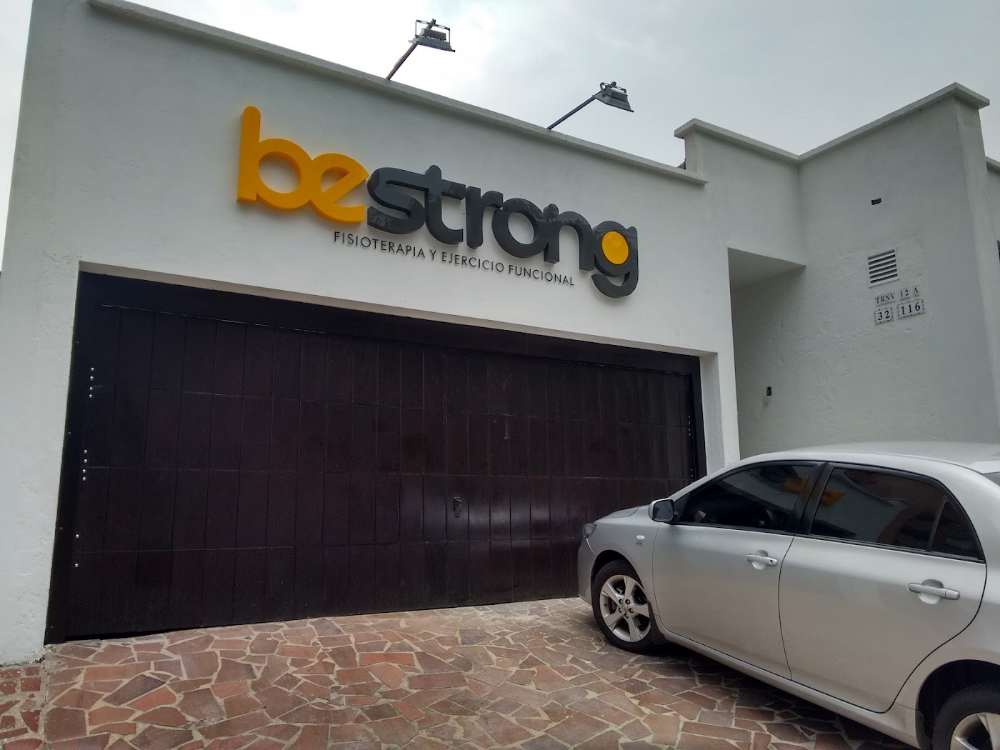
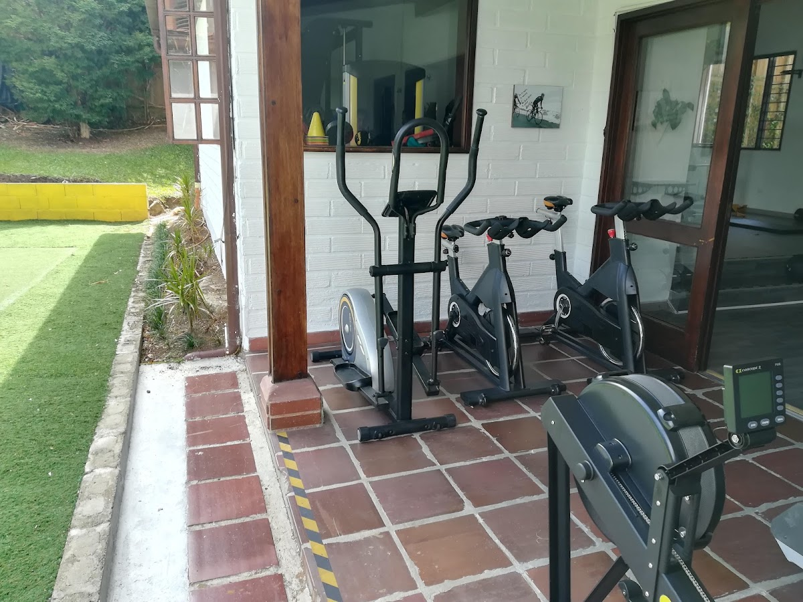
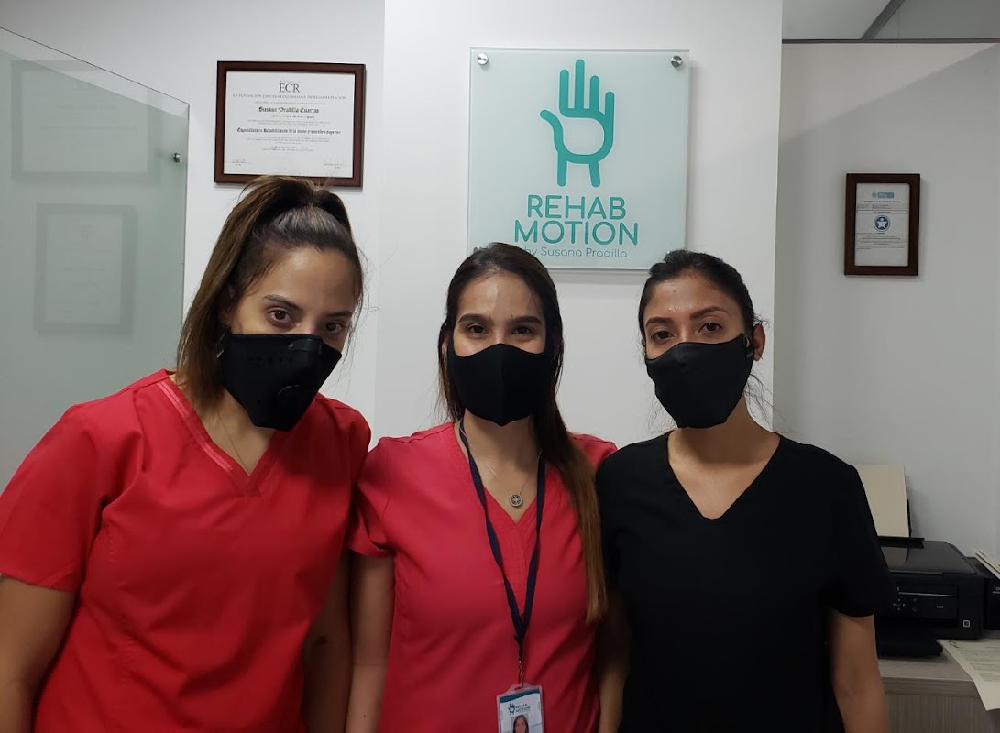

Conoce nuestro espacio


Instalaciones equipadas para tu recuperación
En Bestrong unimos la fisioterapia con el ejercicio funcional: rehabilitamos tu lesión y te dejamos más fuerte que antes de tenerla.
Un mismo equipo te acompaña desde la rehabilitación de tu lesión hasta tu mejor versión física.
Valoración y tratamiento de lesiones musculoesqueléticas con terapia manual y ejercicio.
Entrenamiento en grupos pequeños con acompañamiento profesional y técnica cuidada.
Retorno seguro al deporte con progresiones medibles y prevención de recaídas.
Programas a tu medida según tu lesión, tu condición y tus objetivos.
Nuestra sede de Castropol cuenta con zona de entrenamiento funcional totalmente equipada: racks, TRX, trampolín, bosu y más, en un ambiente cercano y motivador.



"Después de mi lesión de rodilla, el plan me devolvió al entrenamiento en tiempo récord. Súper recomendados."Carlos M. · corredor amateur de Bestrong Fisioterapia
8:00 a.m. – 7:00 p.m.
9:00 a.m. – 1:00 p.m.
Solo con cita previa. Escríbenos por WhatsApp para confirmar disponibilidad.
Consultar dirección exacta al agendar
No. Diseñamos cada plan según tu condición actual y tu lesión, con progresiones seguras desde el primer día.
Trabajamos en grupos reducidos con atención personalizada, para que siempre tengas acompañamiento profesional cercano.
No es obligatoria. Puedes agendar tu valoración inicial directamente por WhatsApp.
Ropa deportiva cómoda y muchas ganas. Nosotros ponemos el equipamiento y el acompañamiento profesional.
Tv. 12A #32-116, Castropol
El Poblado, Medellín
+57 324 392 92 53
(604) 312 80 70
4.8 estrellas
A pocas cuadras de la estación Aguacatala. Encuéntranos en Google Maps.
📍 Ver en Google Maps 💬 Escribir por WhatsApp